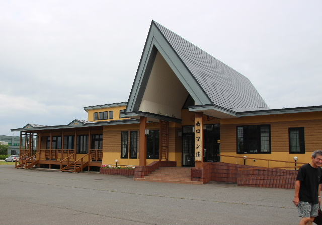
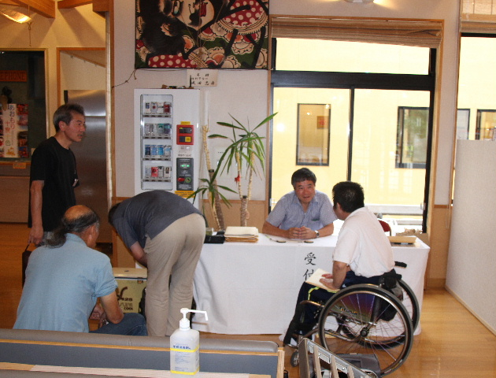
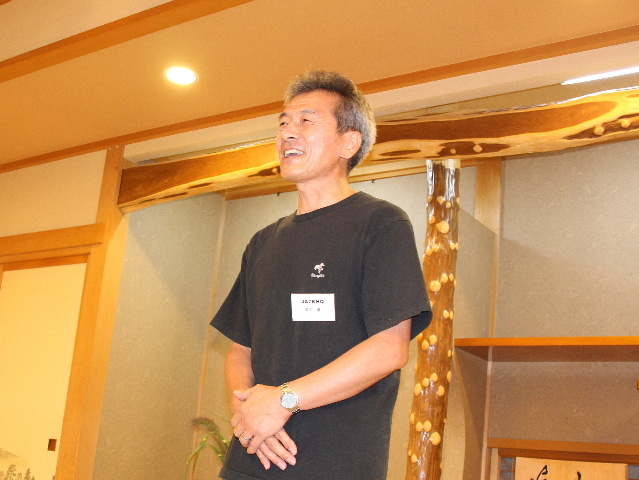
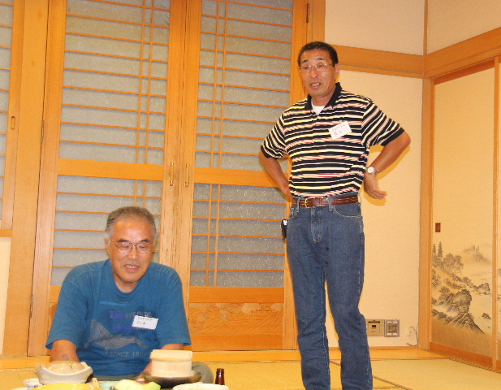
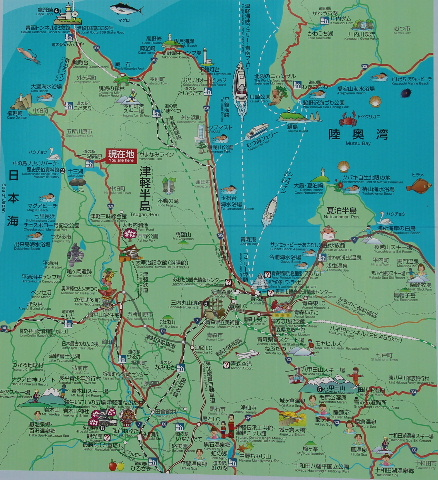
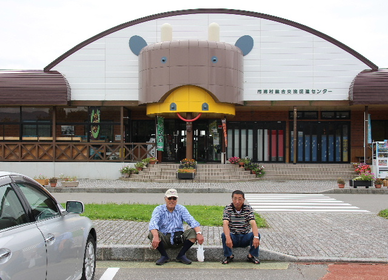
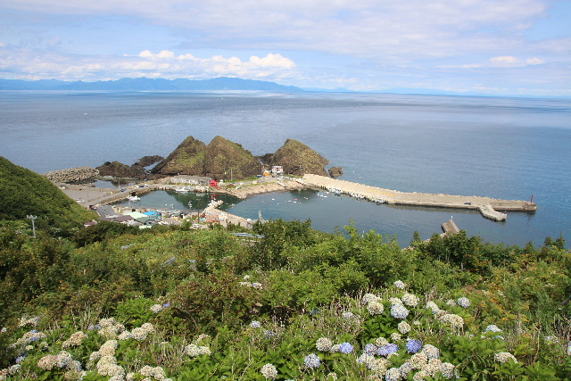
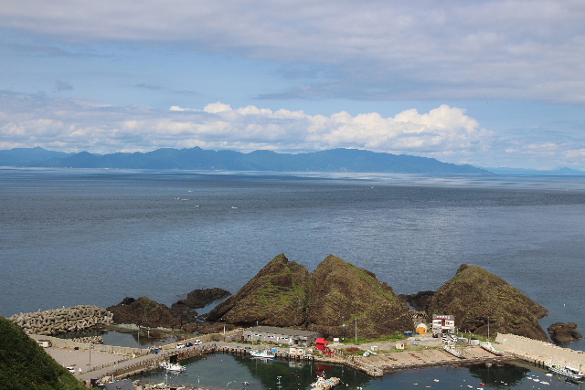
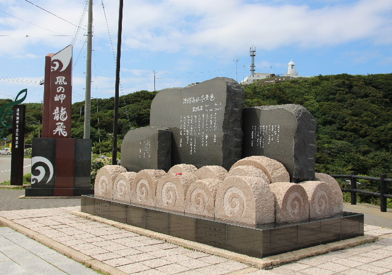
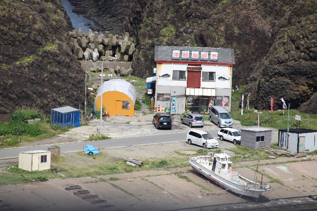

|
◎第42回東北6m SSB Group Meeting in 青森(07-08.Sep.2013)
2013年の第42回東北6SGミーティング・青森大会は、去る9月07～08日の両日、青森県つがる市の"ひばの香る温泉宿"「柏ロマン荘」で開催されました。 |
|
  「柏ロマン荘」で開催された/東北6SG・つがる大会の受付 
  懇親会で幹事役のJA7KHQ局から歓迎の挨拶(左)/近況報告 
[6SG 42回 青森県つがる大会参加局]
JA8JEP(北海道) JG7BBO(青森) JA7CSS(秋田) JA7QVI(宮城) JL1PDL(東京)
JA8XRN(北海道) JI7WTK(青森) JH7VTE(秋田) JH7WER(宮城) 7L4KVO(東京)
JA7KHQ(青森) JH7XRZ(岩手) JA8CRB/7(山形)JP7EIP(宮城)
JA7QPB(青森) JL7IWF(岩手) JA7AHK(宮城) JA7WSZ(宮城)
JE7CAI(青森) JA7AQL(秋田) JA7MIT(宮城) JA1RJU/JA7JU(東京/青森）
∽ 津軽半島（津軽国定公園）∽
 2日目は、つがる市近郊の名所・旧跡や龍飛岬を巡る 太宰治記念館（斜陽館）/亀ヶ岡遺跡など観光地を楽しむ  道の駅・十三湖高原で休憩中の JA8JEP(左)/JA8XRN両局
  龍飛岬の先端/津軽海峡を挟んで北海道(JA8)も間近に
  「津軽海峡冬景色」の碑/石川さゆりの歌も聞ける |
[参考] |
 SEANET CONVENTION REPORTは移動しました。 SEANET CONVENTION REPORTは移動しました。
|